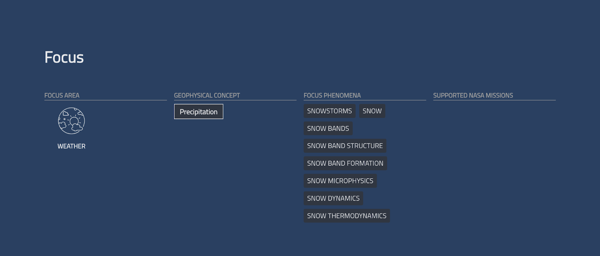
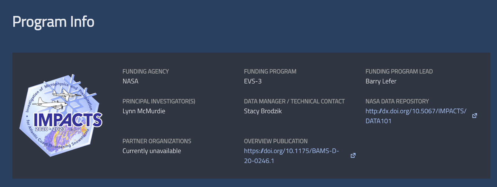

User Guides
Introduction
The Catalog of Archived Suborbital Earth science Investigations (CASEI) is a searchable inventory catalog that provides contextual metadata for NASA campaigns, platforms, and instruments conducted to collect airborne and field data. It also features access to data products for NASA’s airborne and field campaigns and corresponding detailed information. This section will guide users through conducting searches and accessing the various features within the CASEI user interface (UI). Additional details about API searches, CASEI data models, curation process, and other resources can be found in other sections.
Conducting a Search
To begin a search on CASEI, click on the “Explore CASEI” button on the home page (CASEI Website) or click “Explore” in the top right menu.

This action will take you to the “Explore” page where you can select various search criteria for campaigns, platforms, instruments, or data products.
Explore Page Search
On the “Explore” page, users can filter search results by specific metadata elements using dropdown menus. They can search by campaign, platform, instrument, or all of the data products associated with the CASEI inventory.
Campaign Search
For campaigns, users can filter by date range, NASA focus area, geophysical concept, season, geographical region, platforms, and funding agency. Users can also directly type the name of a campaign.
Using the following scenario, this guide will explain how to conduct a basic campaign search within CASEI.
A student wants to know more about NASA campaigns that quantified air quality over the last ten years.
To discover which campaigns meet these criteria, use the dropdown menus to filter the results by selecting relevant search parameters.
How to filter search results:
- Click the dropdown menu for “Date Range” and select “10 years ago” to set the date range for the last 10 years. (Note: can also enter manually using the calendar option)
- Click the dropdown menu for “Focus Area” and select “Atmospheric Composition”
- Click the dropdown menu for “Geophysical Concept” and select “Air Qual”

After making the selections, the campaigns that meet the criteria will be displayed. Active filters will be displayed at the top of the list and can be removed by clicking them. Note, CASEI allows users to add multiple filters for the same metadata elements. Select “Aerosols” as an additional filter for the “Geophysical Concepts”.
To access more detailed information about a campaign, click on the campaign card to navigate to its landing page. For example, click on the Fire Influence on Regional to Global Environments and Air Quality (FIREX-AQ) campaign card.
Continuing with the search scenario, let’s assume the student is only interested in air quality campaigns that occurred over the contiguous United States. CASEI provides the ability to filter results by region when using the “Show Map” feature.
Click “Show Map” to display a map with all the bounding boxes of the campaigns that meet the search criteria. These bounding boxes represent the spatial extent of the campaign.
Users can also create bounding boxes on the map by using the “Draw Polygon” tool in the top right corner. Drawing a polygon will filter results to that spatial extent.
How to create a polygon:
- Click the “Draw Polygon” button
- Draw a polygon around the contiguous United States by clicking on the map to add a vertex
- Double-click to complete the polygon once done drawing
- Click “Save” to filter results to the bounding box, or click “Cancel” to draw a new polygon

After drawing the polygon, scroll down, and only campaigns that are within the spatial extent of the bounding box will be displayed. Note, only one polygon at a time can be applied.
Platform & Instrument Search
Users can also search by platform or instrument on the “Explore” page by clicking on the “Platforms” and “Instruments” tabs at the top of the page. The search process for platforms and instruments is the same as for campaigns, but with different metadata filtering options.
Platforms can be filtered by the instruments used or the platform type (e.g., Air-based, Water-based). For instruments, you can filter by measurement type, measurement style, vertical measurement region, and/or the platforms the instrument has operated on. To access information and data products for the desired platform or instrument, click on the card for that item to go to the landing page.

Data Products Search
Users can also search for data products on the “Explore” page by clicking on the “Data Products” tab at the top of the page. Users can search across all the data products within CASEI instead of exploring the individual landing pages for the campaigns, instruments, and platforms to locate data products. Searching directly for data products has the same functionality as searching for campaigns, platforms, and instruments except that the filter options are modified.
For data products, users can filter by measurement variable, geophysical concept, date range, measurement styles, measurement types, vertical measurement region, and/or related campaigns, platforms, or instruments. The measurement variables come from the Earth Science keywords from the Global Change Master Directory (GCMD). You can access the GCMD keywords here. Users can also filter by study region by using the “Show Map” feature on the campaign search bar.
Using the following scenario, this guide will explain how to conduct a basic data product search within CASEI.
A researcher wants to locate in situ carbon dioxide measurements from atmospheric chemistry field campaigns.
How to conduct a data product search:
- Go to the “Explore” page and click on the “Data Products” tab
- Click the dropdown menu for “Geophysical Concept” and select “Atm Chem”
- Click the dropdown menu for “Measurement Style” and select “In Situ”
- Type carbon dioxide in the “Measurement Variables” search bar and select the “Atmospheric Carbon Dioxide” keyword
After selecting all search criteria, data products that fit these criteria will appear. Click on the links to go to the DAAC landing pages for the data products to access the data files and documentation. For example, click on the data product with the short name “ABoVE_ASCENDS_XCO2_2050” to go to the ORNL DAAC landing page.

Only data products from airborne and field campaigns within the CASEI inventory are listed. To access additional data products from NASA missions or projects, see Earthdata Search
Direct Home Page Search
Users who have come to CASEI with a specific campaign, platform, or instrument in mind can quickly locate information with the “Data Shortcut” search bar on the home page. Here, users can type the campaign, platform, or instrument name that they are looking for, and relevant options will automatically populate. Click on an item to go directly to its landing page.
Using the following scenario, this guide will explain how to conduct a direct search within CASEI.
A researcher wants to know more about the NASA FIREX-AQ field campaign and access its data products.
How to conduct a direct search:
- Go to CASEI home page
- Type FIREX-AQ in the "Data Shortcut" search bar
- Click on the FIREX-AQ card to navigate to its landing page

Navigating the Landing Pages
Each campaign, platform, or instrument has its own landing page in CASEI. The landing pages provide detailed information and resources, as well as a list of associated data products.
Campaign Landing Page
This guide will use the landing page for the Investigation of Microphysics and Precipitation for Atlantic Coast-Threatening Snowstorms (IMPACTS) campaign as an example
Campaign landing pages are organized into six sections: Overview, Focus, Platforms & Instruments, Deployments & Events, Data, and Program Info. Users can access each section by clicking on the tabs near the top of the landing page.
Overview
The “Overview” section includes a short description of the campaign with the study dates, season of study, region, and spatial bounds. It also provides additional resources such as the project website, data repository, and publications for the campaign on the right side of the page. Users can quickly access the entire data for a campaign by clicking the “Campaign DOI” link on the top right of this section. (Note: every campaign may not have a DOI). This links to the campaign landing page for the DAAC where the data is archived and can be downloaded.

Focus
The “Focus” section provides users with details about which NASA focus area the campaign falls under, the geophysical concepts and phenomena that were studied, and NASA missions that were supported by the campaign.
{kind=link}
Platforms & Instruments
The “Platforms & Instruments” section lists all the platforms that were used in the campaign and their instrument payloads. Users can click through each platform by clicking on the platform tabs at the top or by clicking through the white arrows. Additional details about each platform can be accessed by clicking on the platform card to view the associated landing page. Clicking on each instrument will reveal a short description and the instrument measurements. Users can access more information by clicking the “Learn More” link to go to the instrument landing page.

Deployments & Events
The “Deployments & Events” section has an interactive map and timeline where users can see details about platform locations and deployments. The map displays platform tracks and locations for the entire campaign. Users can select a specific platform(s) to display using the legend on the top right. If a campaign has multiple deployments, platform tracks for individual deployments can be displayed by clicking on the green bars on the timeline below.

The timeline allows users to break down each deployment into a detailed view of intensive operational periods (IOPs) as well as significant events, which are dates where a notable specific phenomenon was observed that relates to campaign science objectives. Details can be viewed by clicking on the green (deployments), orange (IOPs), and purple (significant events) bars on the timeline.

Data Products
The “Data Products” section provides users with a list of data products associated with the campaign. Each data product in the list includes the long name, platforms, instruments, and DOI link to the DAAC landing page where users can access the data. Users can filter the data products by platforms and/or instruments using the dropdown menus at the top of the list.

Program Info
The “Program Info” section provides details about the program that funded the campaign, the principal investigator, the data manager, and any partner organizations that participated in the campaign.
{kind=link}
Platforms & Instrument Landing Pages
Platform and instrument landing pages have a similar layout and functionality as campaign landing pages except the information is more condensed.
Platform landing pages are divided into three sections: Overview, Related Campaigns & Instruments, and Data. The “Overview” section provides a short description of the platform and any additional resources. The “Related Campaigns & Instruments” section reviews the instruments that operated on the platform for each of these field campaigns. Users can click on the campaign card and “Learn More” link for the instruments to go to their respective landing pages. The “Data” section provides a list of data products associated with the platform and can be filtered by campaign, instrument, and/or data format.

Instrument landing pages are also divided into three sections: Instrument Details, Instrument Operation, and Data. The “Instrument Details” section provides metadata about the instrument such as measurement type, measurement variables, temporal resolution, spatial resolution, measurement frequency, calibration details, and any additional resources. The “Instrument Operation” describes which platforms the instrument operated on and in what campaigns. Users can click on individual platform or campaign cards to go to their respective landing pages. The “Data” section provides a list of data products associated with the instrument and can be filtered by campaign, platform, and/or data format.